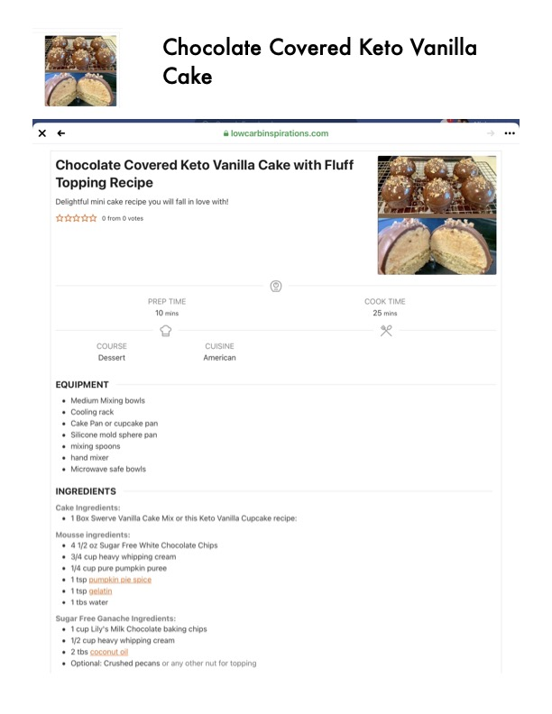

Chocolate Covered Keto Vanilla

Original cookbook page 128
Ingredients
- 10 mins 25 mins
- Cake Ingredients:
- 1 Box Swerve Vanilla Cake Mix or this Keto Vanilla Cupcake recipe:
- Mousse ingredients:
- 41/2 oz Sugar Free White Chocolate Chips
- 3/4 cup heavy whipping cream
- 1/4 cup pure pumpkin puree
- 1tsp pumpkin pie spice
- 1tsp gelatin
- 1tbs water
- Sugar Free Ganache Ingredients:
- 1cup Lily's Milk Chocolate baking chips
- 1/2 cup heavy whipping cream
- 2 tbs coconut oil
- Optional: Crushed pecans or any other nut for topping
Instructions
- Chocolate Covered Keto Vanilla Cake with Fluff Topping Recipe Delightful mini cake recipe you will fall in love with!
- PREP TIME COOK TIME 10 mins 25 mins COURSE CUISINE Dessert American
- Cake Pan or cupcake pan e Silicone mold sphere pan e mixing spoons
- Cake Ingredients: e 1 Box Swerve Vanilla Cake Mix or this Keto Vanilla Cupcake recipe:
Recipe #128 from collection